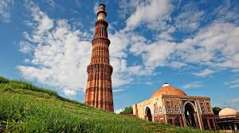
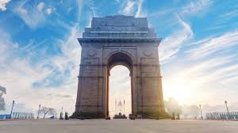
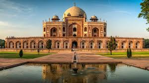
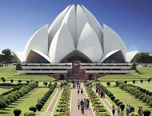

Qutub Minar

A UNESCO World Heritage Site and the world's tallest brick minaret, surrounded by a complex featuring the Quwwat-ul-Islam Mosque and the famous Iron Pillar.
Red Fort

A historic fort and a UNESCO World Heritage Site in Old Delhi, which served as the main residence of the Mughal Emperors, famous for its magnificent walls and annual Independence Day speech.
India Gate

A war memorial located astride the Rajpath (now Kartavya Path), dedicated to the soldiers of the British Indian Army who died in World War I, and a popular evening gathering spot.
Humayun's Tomb

A UNESCO World Heritage Site and the tomb of the Mughal Emperor Humayun. It was the first garden-tomb on the Indian subcontinent and was the inspiration for the Taj Mahal.
Lotus Temple

A beautiful Baháʼí House of Worship known for its spectacular flower-like shape, made of white marble, and serving as a place of worship open to all religions.